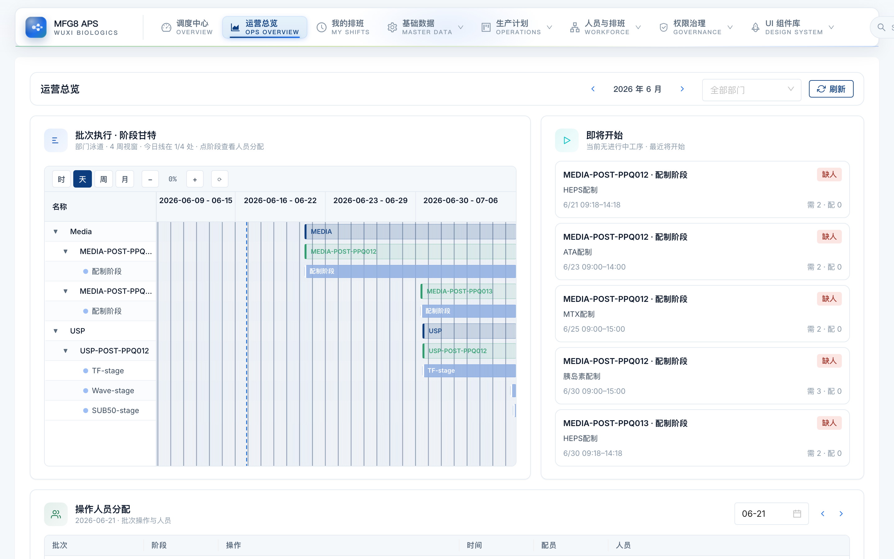
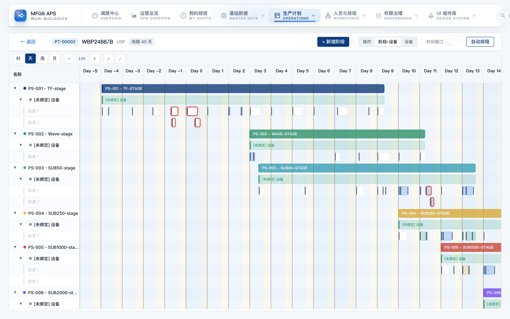
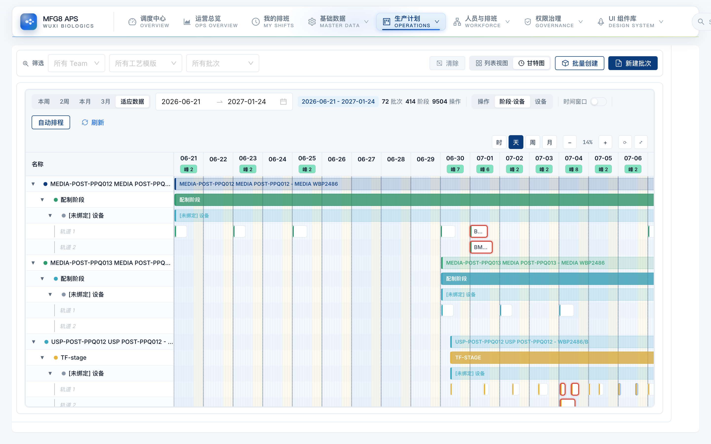
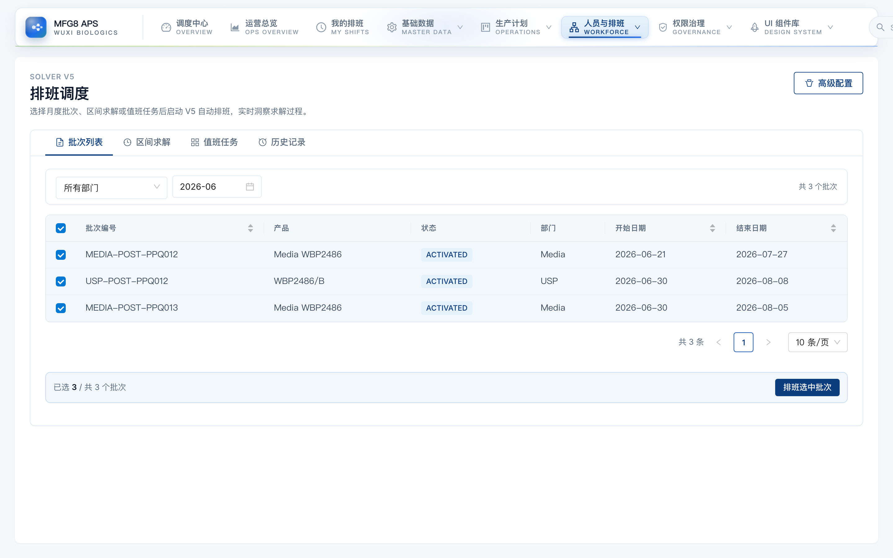
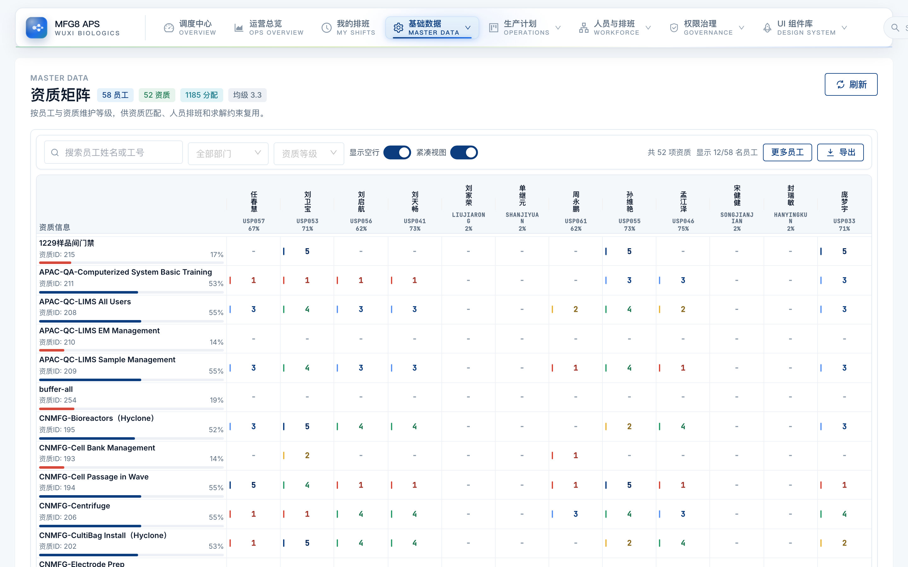
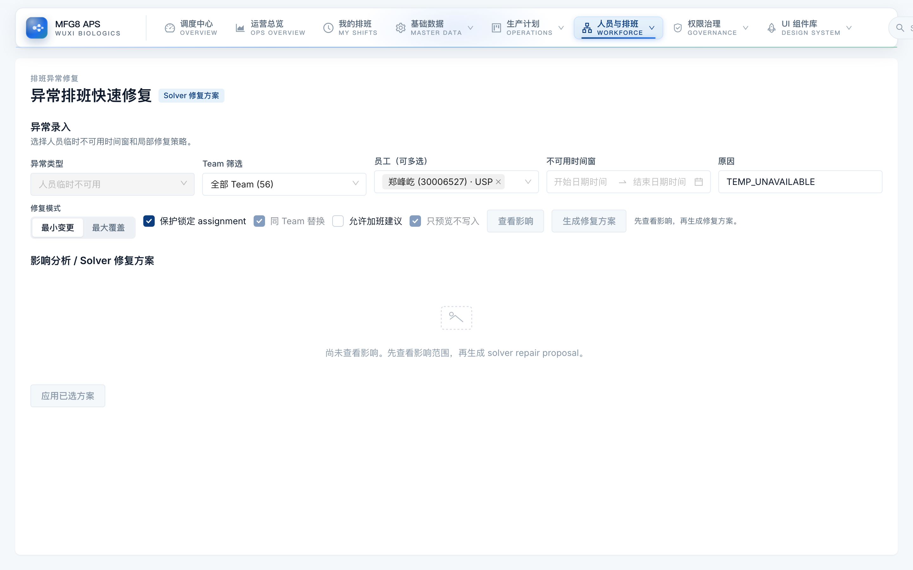
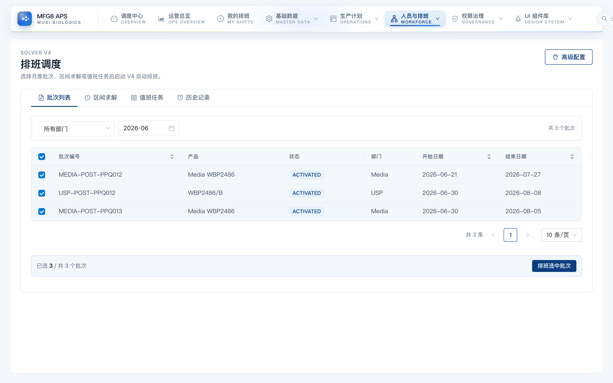

把工艺模板、批次计划、人员排班、资源约束串成一条线
生产一线自研 · AI 辅助
开发的人就是一线，需求不用外传，改起来也快。

商业化工艺常年不变，把人和任务写进模板、按批次套用，不自研排产算法。

一套系统把 media、buffer、上游、下游排在一起，不用各部门各排一套。

排班不只排工艺操作，值班、取样、培训这类独立任务也一起排进去。

不只看有没有资质，还看等级够不够；每个位置单独定，不达标的排不进去。

有人请假，系统先列出受影响的班，再按条件挑出合适的人，一键换上、只动受影响。
简单替换秒级；复杂情况走求解器约 15–30 秒。

复杂的一个月排班 5 分钟出接近最优解，简单的 1 秒；离最优差多少有量化。

过去一轮排班要排班员盯着排好几天，现在交给系统，人只做审核和微调。
排班员排班耗时（精确天数待补），按现有批次量级估算为数天 → 分钟。
谢谢。问题与讨论。